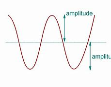
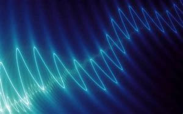
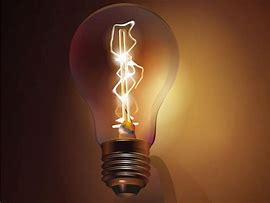

Caracteristicas de la Eléctricidad
Algunas caracteristicas de la eléctricidad son:
Amplitud
La amplitud de una corriente eléctrica es el valor máximo de la corriente en un ciclo. En corriente alterna, se mide en amperios y se representa como el valor pico (p. ej., 220 V) o el valor eficaz (p. ej., 120 V en EE. UU.).
Frecuencia
La frecuencia es el número de ciclos completos que se repiten en un segundo. Se mide en hertz (Hz). En corriente alterna, la frecuencia estándar es de 50 o 60 Hz, lo que significa que la corriente cambia de dirección 50 o 60 veces por segundo.
Ley de OHM

La ley de Ohm establece que la corriente (I) que fluye a través de un conductor es directamente proporcional al voltaje (V) aplicado e inversamente proporcional a la resistencia (R) del conductor (I = V / R). Esta ley es fundamental para el diseño y análisis de circuitos eléctricos y permite calcular la corriente en función del voltaje y la resistencia, o calcular la resistencia necesaria para obtener una corriente deseada..
Potencia
La potencia eléctrica se refiere a la cantidad de energía eléctrica consumida o suministrada por un dispositivo o circuito. Se calcula multiplicando la corriente por el voltaje (P = I * V) y se mide en vatios (W). La potencia eléctrica determina la capacidad de un dispositivo para realizar un trabajo, como encender una bombilla o hacer funcionar un motor. También está relacionada con la eficiencia energética y los costos de electricidad.
Corriente Eléctrica
La corriente eléctrica es el flujo de carga eléctrica a través de un conductor. Se produce cuando hay una diferencia de potencial (voltaje) aplicada a través de un circuito. La corriente eléctrica se mide en amperios (A) y puede ser continua (CC) o alterna (CA), dependiendo de la dirección del flujo de carga.
La corriente eléctrica tambien se divide en otros conceptos como:
Sentido de la corriente
Convención del flujo de carga:
En esta convención, la corriente fluye desde el polo positivo de una fuente de voltaje hacia el polo negativo. Es decir, el sentido de la corriente es opuesto al movimiento real de los electrones.
Convención del flujo de corriente:
Según esta convención, la corriente fluye desde el polo negativo de una fuente de voltaje hacia el polo positivo. Es decir, el sentido de la corriente coincide con el movimiento real de los electrones..
Interacción de las cargas
Las cargas eléctricas interactúan entre sí mediante fuerzas eléctricas. Las cargas opuestas se atraen, es decir, los electrones y los protones se atraen mutuamente, mientras que las cargas del mismo signo se repelen. Esta interacción da lugar a la creación de campos eléctricos, que son regiones de influencia donde se ejerce una fuerza eléctrica sobre otras cargas.
Conductores y aislantes
Los conductores son materiales que permiten que las cargas eléctricas se muevan fácilmente a través de ellos.
Buenos Conductores:
Los metales, como el cobre y el aluminio, son buenos conductores debido a su estructura atómica y la capacidad de sus electrones para moverse libremente..
Malos Conductores:
Por otro lado, los aislantes son materiales que dificultan el movimiento de las cargas eléctricas, como el plastico o la madera.
Historia de la Eléctricidad
La comprensión y aplicación de la corriente eléctrica han evolucionado a lo largo de la historia. Algunos hitos importantes incluyen:
Descubrimiento de la electricidad estática: Experimentos de la antigua Grecia y las observaciones de ámbar frotado que atrae objetos livianos.
Leyes de la electricidad: El trabajo de científicos como Charles Coulomb, André-Marie Ampère y Georg Simon Ohm estableció los fundamentos teóricos de la electricidad.
Invención de la batería: Alessandro Volta inventó la primera batería en 1800, permitiendo la producción de corriente continua.
Desarrollo de generadores y motores: Michael Faraday y Nikola Tesla jugaron roles cruciales en el desarrollo de generadores y motores eléctricos, allanando el camino para la corriente alterna.

Usos Cotidianos de la eléctricidad
La corriente eléctrica tiene una amplia variedad de usos en la vida moderna, que incluyen:
Suministro de energía: La electricidad es esencial para iluminación, electrodomésticos, sistemas de climatización y todo tipo de dispositivos electrónicos.
Industria y manufactura: La corriente eléctrica se utiliza en procesos industriales, como soldadura, fundición, mecanizado y producción de productos químicos.
Transporte: Los vehículos eléctricos utilizan baterías y motores eléctricos para su funcionamiento, reduciendo las emisiones y la dependencia de los combustibles fósiles.
Medicina: La corriente eléctrica se aplica en técnicas médicas como electrocardiogramas, estimulación muscular, electroterapia y dispositivos de diagnóstico.